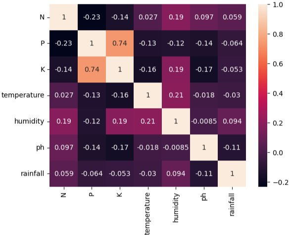

Turning data & stories
into development impact
Multidisciplinary professional working at the intersection of agricultural biotechnology, data analytics, digital learning, and strategic communications — helping development organizations make better decisions and reach more people.
I am a multidisciplinary professional with a BSc in Agricultural Biotechnology from KNUST, working at the intersection of agriculture, digital learning, data analytics, and strategic communications to support sustainable development.
My experience includes supporting Moodle-based e-learning programmes and communications for the Agri-Business Facility for Africa project implemented by GIZ, as well as developing knowledge products that make complex concepts accessible and actionable.
I co-developed a winning proposal for the SNRD Africa Innovation Challenge 2025 on inclusive e-learning for rural development, focused on reaching women and low-connectivity communities. I am passionate about using digital innovation, data, and effective communication to strengthen agribusiness ecosystems, expand access to knowledge, and improve rural livelihoods.
- Develop and execute social media strategies to increase visibility, engagement, and impact of UWSD's initiatives in sustainable agriculture, climate-smart innovation, and women's economic empowerment.
- Create, edit, and publish high-quality content (posts, captions, visuals, and short-form storytelling) for LinkedIn and Facebook, aligned with organisational goals.
- Translate technical and development-focused topics into clear, compelling, audience-friendly messaging to strengthen UWSD's digital presence and brand positioning.
- Plan and manage content calendars aligned with programme activities, project milestones, and international observances such as International Women's Day and climate-related campaigns.
- Collaborate with programme teams to document field activities, capture impact stories, and highlight outcomes across agricultural value chains.
- Monitor engagement metrics and platform insights to continuously improve content performance and audience reach.
- Managed e-learning courses on Moodle — uploading materials and ensuring smooth platform navigation.
- Contributed subject matter inputs on Climate-Smart Agriculture and Agro-processing for course development.
- Developed fact sheets, articles and reports; published content on the ABF website.
- Created social media content for the e-Academy channels to boost visibility and engagement.
- Co-developed the winning proposal for the 2025 SNRD Africa Innovation Challenge on E-Learning for Rural Development.
- Supported Matching Grant Fund field visits, concept note preparation, and project database management.
- Assisted in tissue culture, micropropagation, PCR, DNA extraction, and sequencing.
- Supported lab operations ensuring compliance with safety and quality protocols.
Co-developed a winning proposal on "E-Learning for Rural Development" focused on reaching women and low-connectivity communities across sub-Saharan Africa. Recognised by the Scaling Up Rural Development Africa network as an innovative digital solution for inclusive agricultural education.

Crop Recommendation Analysis
Analyzes soil nutrients (N, P, K, pH) and climate factors (temperature, humidity, rainfall) to understand how they influence crop suitability and improve farmer decision-making.
View on KaggleSocial Media Analytics
In progressAnalyzing engagement trends and performance insights across platforms to guide content strategy for development organizations.
AI for Development
In progressExploring practical AI opportunities in agriculture and rural education, with a focus on low-resource and low-connectivity contexts.
Communications
Data Analytics
Artificial Intelligence & E-Learning
"Benjamin Yeboah has worked with GIZ Ghana as a National Service Personnel, consistently demonstrating a high level of professionalism, strong work ethic, and commitment to the goals of the organization. He contributed meaningfully to operations by effectively carrying out assigned duties, supporting team objectives, and displaying excellent interpersonal skills in collaborating with colleagues and stakeholders. He has shown adaptability, reliability, and the ability to work under minimal supervision — qualities that made him a valuable part of the team. Benjamin Yeboah is a competent and dedicated professional who will be an asset to any organization."
BSc Agricultural Biotechnology
Kwame Nkrumah University of Science and Technology (KNUST)
Kumasi, Ghana
Let's work together
Open to freelance projects, collaborations, fellowships, and full-time opportunities in agri-development, data analytics, communications, and digital learning.
Based in Accra, Ghana
Available for remote and in-person roles across West Africa and internationally.
Download Full CV